Product Input
Barcode scan / label image
Product database / OCR

Thesis Presentation, 28 May 2026
A Mobile AI-Based Decision Support System for Personalized Food Label Interpretation
Suresh Lama
Master of Engineering (UAS), Intelligent Systems
Novia University of Applied Sciences, Vaasa
Supervisor: Ray Pörn
Decision Paralysis
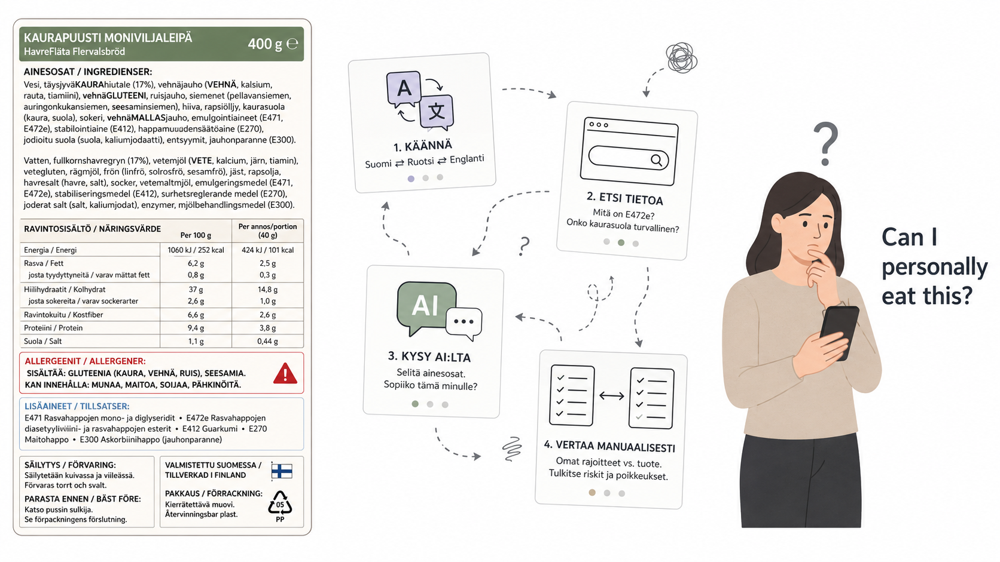
Shopping Pressure
Food labels provide product information, but consumers still have to interpret what that information means for their own dietary needs.
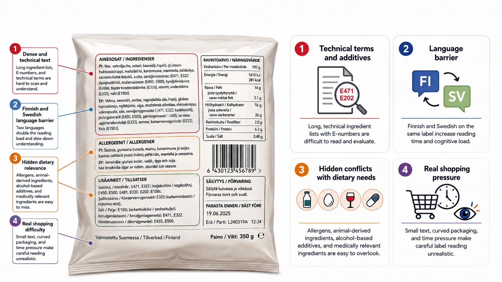
Local Context
Food labels are often in Finnish and Swedish. For many consumers, translation is only the first step.
The real task is deciding dietary suitability.
From label to decision
Source: Finnish Food Authority states that mandatory labelling for prepacked foods in Finland must generally be provided in Finnish and Swedish, with municipality-specific exceptions.
Thesis Aim
This thesis designs, implements, and evaluates a mobile AI-supported prototype for personalized food label interpretation.
Barcode scan / label image
Product database / OCR
Allergy / medical
Religious-cultural / ethical / lifestyle
Defined rules
GPT-4.1 interpretation
Suitable / warning / unsuitable / uncertain
Explanation, confidence, uncertainty
The goal is decision support, not final dietary authority.
Research Questions
What practical difficulties do users face when interpreting food labels in Finland?
How can a mobile application support personalized food label interpretation using dietary preferences defined by the user?
How can filtering based on rules and interpretation supported by AI be combined to provide explainable dietary decision support?
What limitations affect the reliability of the LabelWise prototype and its future lightweight model pathway?
User Study Overview
The survey focused on five areas:
Main Label Difficulties
Respondents also struggled with technical terms and dietary meaning.
selected language difficulty, but technical and dietary barriers were also reported.
The problem is broader than translation. Users need contextual interpretation.
Current Workarounds
Participants already use multiple tools, but the decision still requires repeated checking across separate services.
The issue is not lack of effort. The issue is high-friction, fragmented interpretation.
Dietary Needs and Ingredient Concerns
Generic product information is not enough when suitability depends on personal dietary context.
Religious/cultural rules, lifestyle preferences, allergy-related needs, medical needs
The same ingredient can be harmless, restricted, risky, or uncertain depending on the person.
Confusing ingredients are common
Generic product information is not enough when suitability depends on the user's dietary context.
App Usefulness and Privacy Findings
The survey justified the app concept while making privacy a core design requirement.
19.3% maybe · 4.6% no
Dietary preferences may reveal health, religion, culture, ethics, or lifestyle context.
LabelWise needed to be useful, explainable, and privacy-conscious from the start.
Requirements Derived from Survey
Barcode scan, product lookup, image input, OCR fallback, preference setup, personalized result, explanation.
Simple interface, practical response time, privacy-conscious handling, explainable output, uncertainty communication.
Backend review, curated teacher records, lightweight model experimentation, confidence validation.
From Requirements to Prototype
LabelWise is a mobile AI-supported system that helps users interpret packaged food labels using their own dietary preferences and restrictions.
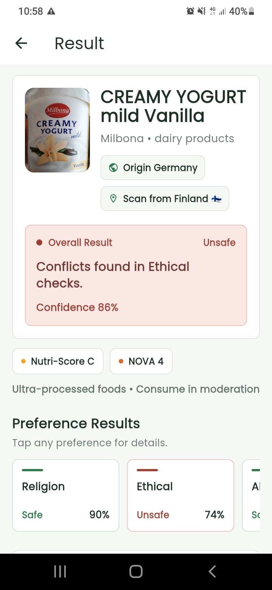
Personalized result with explanation, confidence, and feedback
Barcode and label image input for shopping.
Allergies, medical, cultural, ethical, lifestyle preferences.
Rules for known cases. GPT-4.1 for ambiguous ones.
Suitability, concerns, confidence, uncertainty.
System Boundaries
LabelWise reduces interpretation friction. The final decision remains with the user.
LabelWise Workflow
The workflow turns fragmented label information into structured dietary decision support.
System Architecture
Product Data Retrieval
A barcode becomes a product-data request: LabelWise sends the code to Open Food Facts and receives available label information through a free open API.
Fast input for packaged food during shopping.
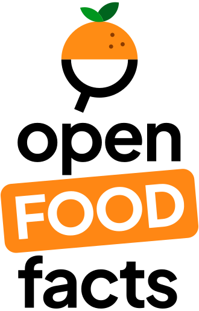
A free, open, collaborative, non-profit food product database, often described as a Wikipedia-like database for food products.
{
"product_name": "...",
"ingredients_text": "...",
"allergens_tags": [...],
"nutriments": {...}
}
Returns ingredients, allergens, nutrition values, product category, labels, and Nutri-Score / NOVA when available.
Product Data Fallback
When barcode data are missing or incomplete, LabelWise asks the user to capture or upload a clear food package or ingredient-label image.
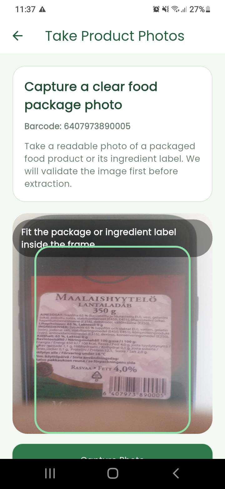
Missing or incomplete product data.
Rejects unrelated or non-food images.
Clear, relevant, not blurry.
Personalization Layer
LabelWise structures dietary preferences into five user-selected categories so personal dietary context can be captured clearly, consistently, and cautiously.
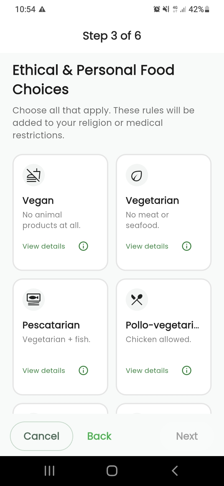
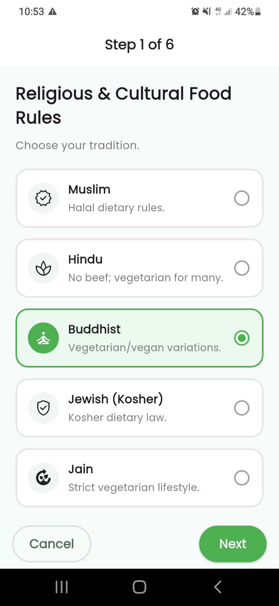
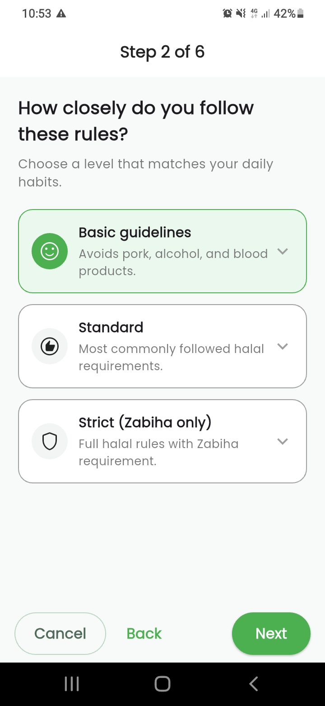
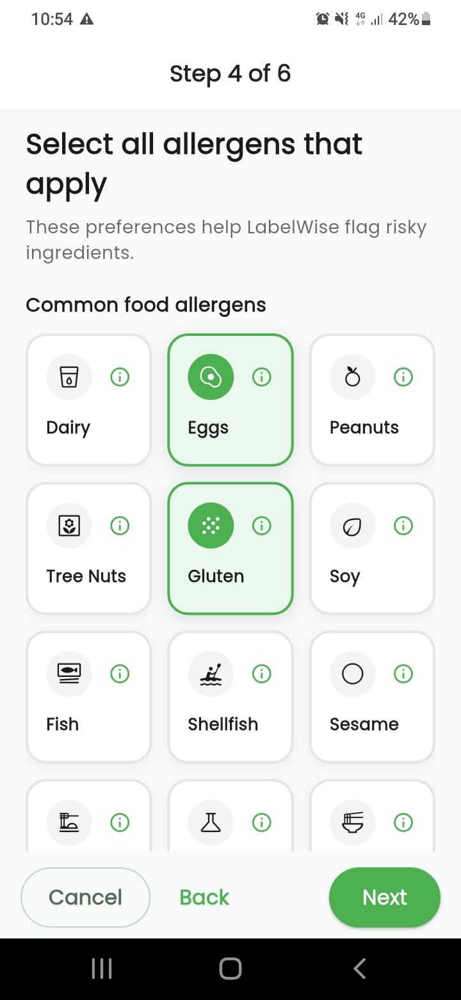
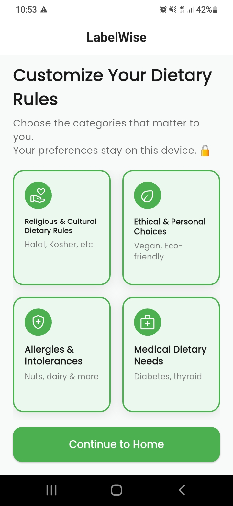
Muslim, Hindu, Kosher, Jain
Vegan, vegetarian, eco-friendly
Dairy, gluten, peanuts, custom
Cautious condition-aware checks
Keto, high-protein, balanced macros
Hybrid Analysis Engine
LabelWise uses a hybrid engine so clear dietary conflicts are handled predictably, while ambiguous ingredients can still be interpreted and explained.
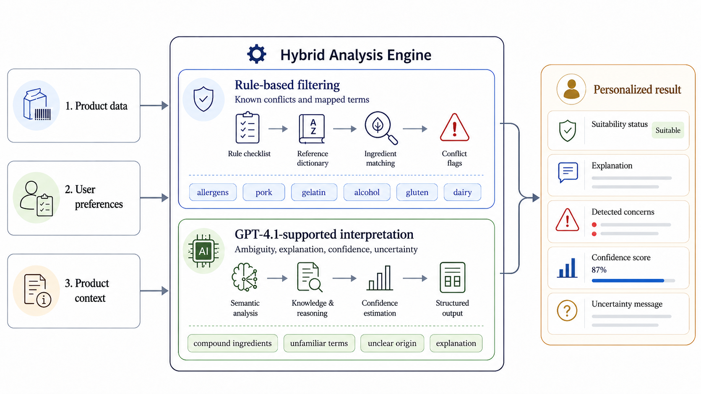
The hybrid engine avoids two weak extremes: rule-only rigidity and AI-only overclaiming.
Rule-Based Layer
LabelWise uses predefined restriction dictionaries to detect clear dietary conflicts before deeper interpretation is needed.
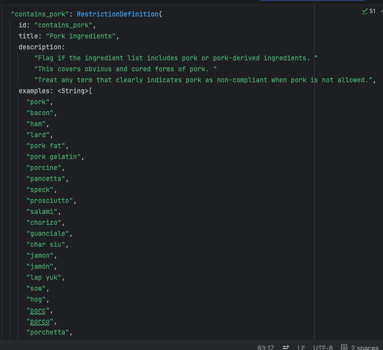
This is more than one keyword. It is a mapped restriction dictionary.
Same input gives same match
Clear conflicts detected immediately
Matched term shown in explanation
AI Interpretation Layer
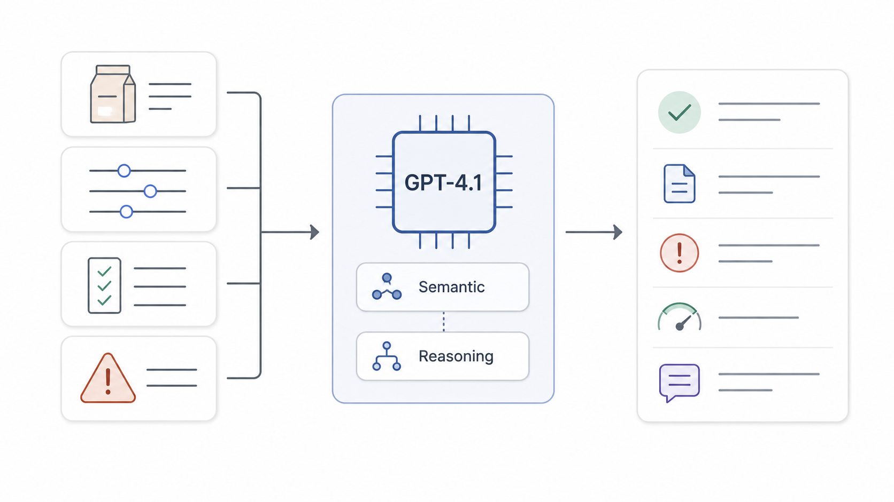
Confidence Score
{
"status": "unsafe",
"concerns": ["ethical conflict"],
"explanation": "...",
"confidence": 86,
"uncertainty": "..."
}The confidence score is generated inside the same structured teacher output as the result, explanation, detected concerns, and uncertainty notes.
Not a calibrated probability or certified safety score.
Confidence supports interpretation, but it does not prove dietary safety.
Result Output
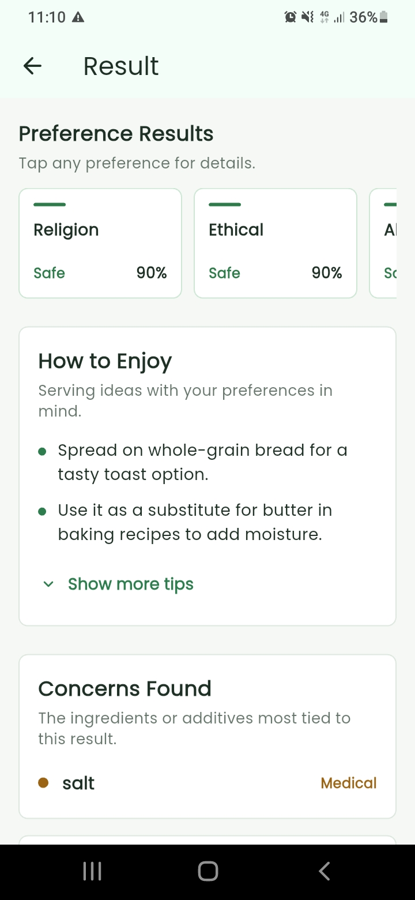
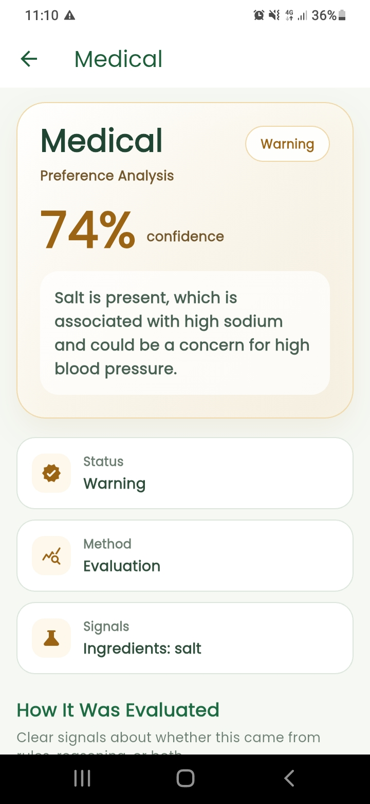